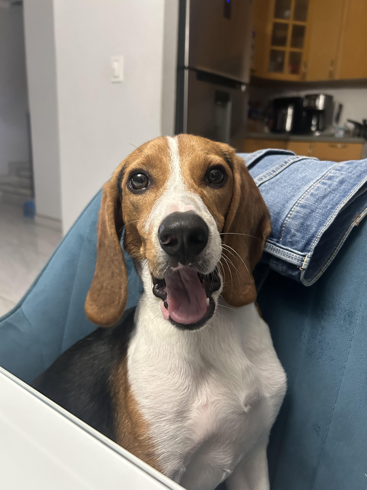
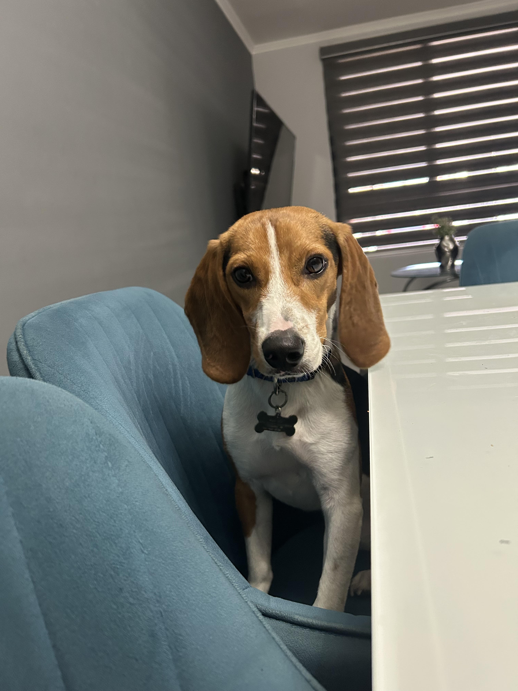

Adopta una huellita
Cuando conocí a Max, me di cuenta de lo mucho que un animalito puede cambiar nuestra vida y de lo agradecidos que son cuando alguien les da una oportunidad. Ahora él vive feliz, con techo, comida y mucho cariño, pero hay muchos que esperan lo mismo.
Adoptar es una decisión que cambia dos vidas: la del animal que encuentra un hogar y la tuya, que recibe un compañero fiel.
Lo que debes tener en cuenta antes de adoptar:
- Tener disposición de cuidar al animal durante toda su vida
- Contar con un espacio seguro y limpio para él
- Darle alimento adecuado, atención veterinaria y cariño diario
- Ser responsable y comprometido


Si deseas adoptar o conocer más, acércate a nuestra escuela o contáctanos para orientarte.